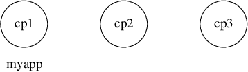
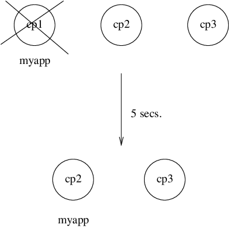
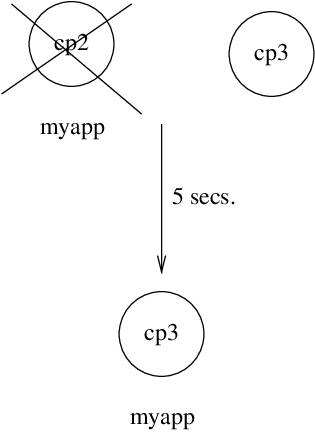
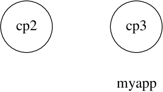
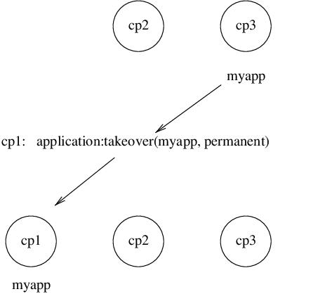

Distributed Applications
View SourceIntroduction
In a distributed system with several Erlang nodes, it can be necessary to control applications in a distributed manner. If the node, where a certain application is running, goes down, the application is to be restarted at another node.
Such an application is called a distributed application. Note that it is the control of the application that is distributed. All applications can be distributed in the sense that they, for example, use services on other nodes.
Since a distributed application can move between nodes, some addressing
mechanism is required to ensure that it can be addressed by other applications,
regardless on which node it currently executes. This issue is not addressed
here, but the global or pg modules in Kernel can be used for this purpose.
Specifying Distributed Applications
Distributed applications are controlled by both the application
controller and a distributed application controller process called
dist_ac. Both processes are part of the Kernel application.
Distributed applications are thus specified by
configuring the Kernel application, using the following configuration
parameter (see also Kernel):
distributed = [{Application, [Timeout,] NodeDesc}]
- Specifies where the application
Application = atom()can execute. NodeDesc = [Node | {Node,...,Node}]is a list of node names in priority order. The order between nodes in a tuple is undefined.Timeout = integer()specifies how many milliseconds to wait before restarting the application at another node. It defaults to 0.
For distribution of application control to work properly, the nodes where a distributed application can run must contact each other and negotiate where to start the application. This is done using the following configuration parameters in Kernel:
sync_nodes_mandatory = [Node]- Specifies which other nodes must be started (within the time-out specified bysync_nodes_timeout).sync_nodes_optional = [Node]- Specifies which other nodes can be started (within the time-out specified bysync_nodes_timeout).sync_nodes_timeout = integer() | infinity- Specifies how many milliseconds to wait for the other nodes to start.
When started, the node waits for all nodes specified by sync_nodes_mandatory
and sync_nodes_optional to come up. When all nodes are up, or when all
mandatory nodes are up and the time specified by sync_nodes_timeout has
elapsed, all applications start. If not all mandatory nodes are up, the node
terminates.
Example:
An application myapp is to run at the node cp1@cave. If this node goes down,
myapp is to be restarted at cp2@cave or cp3@cave. A system configuration
file cp1.config for cp1@cave can look as follows:
[{kernel,
[{distributed, [{myapp, 5000, [cp1@cave, {cp2@cave, cp3@cave}]}]},
{sync_nodes_mandatory, [cp2@cave, cp3@cave]},
{sync_nodes_timeout, 5000}
]
}
].The system configuration files for cp2@cave and cp3@cave are identical,
except for the list of mandatory nodes, which is to be [cp1@cave, cp3@cave]
for cp2@cave and [cp1@cave, cp2@cave] for cp3@cave.
Note
All involved nodes must have the same value for distributed and
sync_nodes_timeout. Otherwise the system behavior is undefined.
Starting and Stopping Distributed Applications
When all involved (mandatory) nodes have been started, the distributed
application can be started by calling application:start(Application) at all
of these nodes.
A boot script (see Releases) can be used that automatically starts the application.
The application is started at the first operational node that is listed in the
list of nodes in the distributed configuration parameter. The application is
started as usual. That is, an application master is created and calls the
application callback function:
Module:start(normal, StartArgs)Example:
Continuing the example from the previous section, the three nodes are started, specifying the system configuration file:
> erl -sname cp1 -config cp1
> erl -sname cp2 -config cp2
> erl -sname cp3 -config cp3When all nodes are operational, myapp can be started. This is achieved by
calling application:start(myapp) at all three nodes. It is then started at
cp1, as shown in the following figure:

Similarly, the application must be stopped by calling
application:stop(Application) at all involved nodes.
Failover
If the node where the application is running goes down, the application is
restarted (after the specified time-out) at the first operational node that is
listed in the list of nodes in the distributed configuration parameter. This
is called a failover.
The application is started the normal way at the new node, that is, by the application master calling:
Module:start(normal, StartArgs)An exception is if the application has the start_phases key defined (see
Included Applications). The application is then
instead started by calling:
Module:start({failover, Node}, StartArgs)Here Node is the terminated node.
Example:
If cp1 goes down, the system checks which one of the other nodes, cp2 or
cp3, has the least number of running applications, but waits for 5 seconds for
cp1 to restart. If cp1 does not restart and cp2 runs fewer applications
than cp3, myapp is restarted on cp2.

Suppose now that cp2 goes also down and does not restart within 5 seconds.
myapp is now restarted on cp3.

Takeover
If a node is started, which has higher priority according to distributed than
the node where a distributed application is running, the application is
restarted at the new node and stopped at the old node. This is called a
takeover.
The application is started by the application master calling:
Module:start({takeover, Node}, StartArgs)Here Node is the old node.
Example:
If myapp is running at cp3, and if cp2 now restarts, it does not restart
myapp, as the order between the cp2 and cp3 nodes is undefined.

However, if cp1 also restarts, the function application:takeover/2 moves
myapp to cp1, as cp1 has a higher priority than cp3 for this
application. In this case, Module:start({takeover, cp3@cave}, StartArgs) is
executed at cp1 to start the application.
